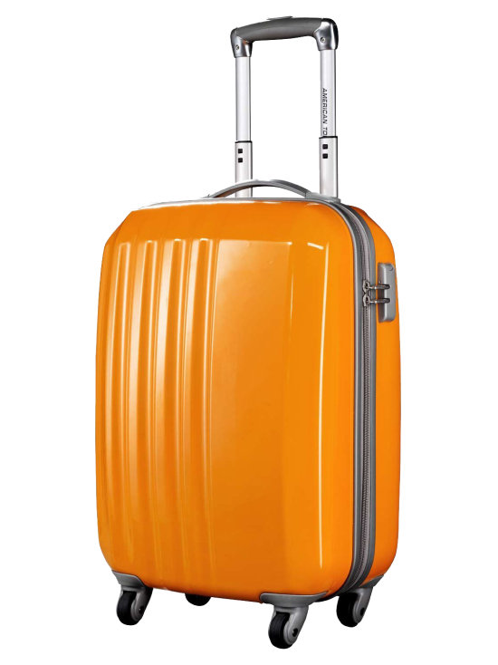
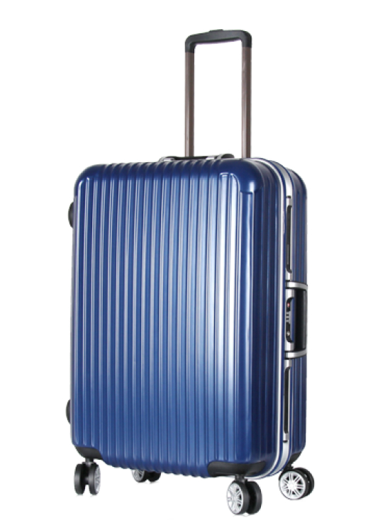
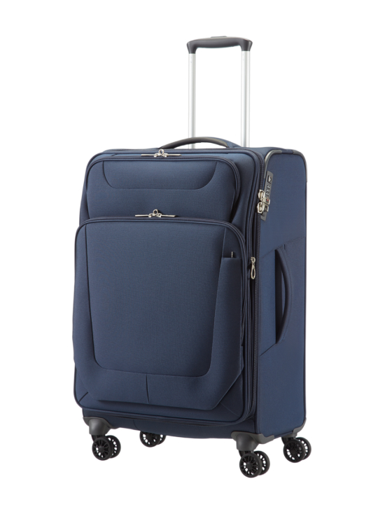

Fizemos a lendária lista.
(novamente!)
Novo em folha

Estojo de jóias
Apresentando nosso novo estojo de jóias para todos sua preciosa carga.
Materiais sustentáveis
Utilizamos materiais reciclados em 100% de nossos produtos.
Cada detalhe matters
Estamos obcecados com os detalhes. Isso significa que nós não negligenciamos qualquer parte de nossos produtos quando se trata de sustentabilidade - e os zíperes são um deles. Por que não deveriam eles são reciclados?


Ser sustentável nem sempre é fácil, mas vale a pena
Passamos anos desenvolvendo nosso couro vegetariano preferido, que é fabricado a partir de duas camadas de PU que envolvem uma camada de poliéster reciclado, criando um tecido que é feito de 60% de material reciclado que acrescenta um sotaque luxuoso a malas, acessórios e bolsas.


Upcycling em seu melhor
100% das garrafas plásticas pós-consumo se transformam em um tecido ultra-leve, resistente à água, que usamos apenas em sobre cada produto que fabricamos. Nosso Nylon Negativo recebe o selo de aprovação sustentável da Oeko-Tex Standard 100, e o Global Recycled Standard.


Dando pos plástico de consumo a segunda vida
A fibra de algodão natural combina com fios feitos de garrafas plásticas recicladas pós-consumo para criar um lona durável, acabada com um revestimento de silicone (que tem um menor impacto ambiental, contém menos químicos, e tem uma vida útil mais longa do que outros plásticos... de revestimentos) para protegê-lo de manchas. Nosso Ecocraft A lona recebe o selo sustentável de aprovação do Oeko-Tex Standard 100, e o Global Recycled Padrão.


Melhor Juntos
Nossos conjuntos de viagem cuidadosamente emparelhados feito para outros estilos como nosso Pet Carrier e Aviator Carry-On.
Best-seller

Voo de aviao
Conheça o Aviator, nosso carro-chefe de coleta de bagagem neutra em carbono.
Nosso impacto
16,853 +
toneladas de CO2 compensadas através do nosso programas de remessa e produtos neutros em carbono
Até hoje, tiramos o equivalente a 3.631 carros a estrada, durante um ano.


300,000 +
árvores plantadas através de projetos de reflorestamento do Éden
Até hoje, plantamos 14 vezes o número de árvores no Central Park
de Nova Iorque.
Junto com os Projetos de Restauração do Éden, estamos restaurando florestas, criando empregos, protegendo ecossistemas, e mitigando a mudança climática.


5,5 milhoes +
garrafas plásticas recicladas e transformadas em produto
Dar uma segunda vida às garrafas plásticas de água pós-consumo ao transformá-los em produtos mais duradouros como nossos Os estilos Nylon® negativo e Ecocraft Canvas® - é uma chave maneira de reduzir a poluição plástica.


For every type of journey
-

$189
-

$175
-

$121
-
 $175
$175 -
 $187
$187